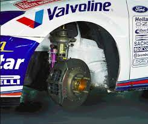

To enjoy all areas of this website including access to competitions and special offers, please log-in or register here, thank you.

Engine
Ford 2.0-litre Cosworth Duratec R engine. Four cylinders, 16 valves, two litres. Ford electronic engine management system. Garrett turbocharger (with FIA required 34 mm inlet restrictor). Air/air intercooler with external water spray. Catalytic converter.
Power
300 bhp at 6500 rpm
Torque
550 nm at 4000 rpm
Transmisson
permanent four-wheel drive with M-Sport designed and manufactured active front, centre and rear differentials. Pi electronic differential control units. M-Sport / XTrac 240 six-speed sequential gearbox with electro-hydraulically controlled shift option.
Suspension
Front and rear MacPherson struts with Reiger external reservoir dampers, adjustable in bump and rebound. Fully adjustable fabricated steel links. Front and rear anti-roll bars. Titanium uprights. Ceramic wheel bearings.
Brakes
Gravel - 300mm Brembo ventilated discs with Brembo four piston monoblock calipers. Asphalt - 370mm Brembo ventilated discs with Brembo eight-piston monoblock calipers. Hydraulic handbrake. Adjustable front / rear bias.
Steering
Power-assisted high-ratio (12:1) rack and pinion. Two turns lock to lock.
Wheels
Gravel: 7in x 15in (magnesium) wheels with Pirelli 650mm tyres. Asphalt: 8in x 18in (magnesium) wheels with Pirelli 650mm tyres.
Bodyshell
Unitary construction. Unique pressed steel side panels. Welded T45 steel safety roll cage. Aerodynamic rear spoiler. Unique front bumper treatment.
Electronics
Full Pi chassis and engine data acquisition for on-event diagnostics and performance development.
Fuel Tank
FIA FT3 tank, 80 litre capacity, located centrally.
Length: 4152mm. Width: 1770mm. Height: 1420mm. Wheelbase: 2615mm. Weight: 1230kg minimum